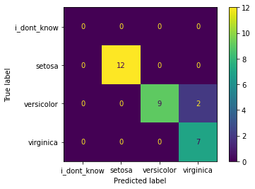

Basic PVT Setup and Example
Import
AgentClientfrom moduleia.gaius.agent_client
[1]:
from ia.gaius.agent_client import AgentClient
[2]:
agent_info = {'name': '',
'domain': 'gaius-api',
'secure': False,
'api_key': 'ABCD-1234'}
[3]:
agent = AgentClient(agent_info)
[4]:
agent.connect()
[4]:
{'connection': 'okay', 'agent': 'simple'}
[5]:
agent.show_status()
[5]:
{'AUTOLEARN': False,
'PREDICT': True,
'SLEEPING': False,
'emotives': {},
'last_learned_model_name': 'cda375bca8ec4af85dc666ccff417e4841a1b475',
'models_kb': '{KB| objects: 150}',
'name': 'P1',
'size_WM': 0,
'target': '',
'time': 300,
'vectors_kb': '{KB| objects: 149}'}
[6]:
agent.get_all_genes(nodes=['P1'])
[6]:
{'genes': {'always_update_frequencies': False,
'auto_learn_algorithm': 'basic',
'auto_learn_metric': 'WM_size',
'classifier': 'CVC',
'max_predictions': 100,
'near_vector_count': 3,
'persistence': 5,
'predict_on_nth_event': 1,
'quiescence': 3,
'recall_threshold': 0.2,
'smoothness': 3,
'sort_metric': 'potential'}}
[ ]:
Iris Dataset Training
Train and test on iris-flowers dataset using the PerformanceValidationTest class from ia.gaius.pvt. This dataset is stored locally in GDF format.
[7]:
from ia.gaius.pvt import PerformanceValidationTest
- Configure the test to:
Conduct a classification test
Train using an 80/20 training/testing data split
Use 100% of the dataset (150 records)
learn after guessing during training phase (test_prediction_strategy = continuous)
Clear All Memory on agent before conducting PVT
Shuffle the data so it is in random order
[8]:
pvt = PerformanceValidationTest(agent=agent, ingress_nodes=['P1'], query_nodes=['P1'], num_of_tests=1, pct_of_ds=100, pct_res_4_train=80,
test_type='classification', dataset_location='filepath', results_filepath=None,
ds_filepath='../../../../datasets/iris-flowers/', test_prediction_strategy='continuous',
clear_all_memory_before_training=True, turn_prediction_off_during_training=False, shuffle=True)
num_of_tests = 1
ds_filepath = ../../../../datasets/iris-flowers/
pct_of_ds = 100
pct_res_4_train = 80
summarize_for_single_node status = False
[9]:
pvt.conduct_pvt()
Conducting Classification PVT...
Conducting Test # 0
---------------------
Length of Training Set = 120
Length of Testing Set = 30
Clearing memory of selected ingress nodes...
Initialize labels set...
{'P1': set()}
Created labels set...
Preparing to train agent...
train - 0
train - 100
Finished training agent!
test - 0
Getting Classification Metrics...
Saving results to pvt_results...
Plotting Results...
-----------------Test#0-P1-Plots-----------------

-----------------Test#0-hive-Plots-----------------